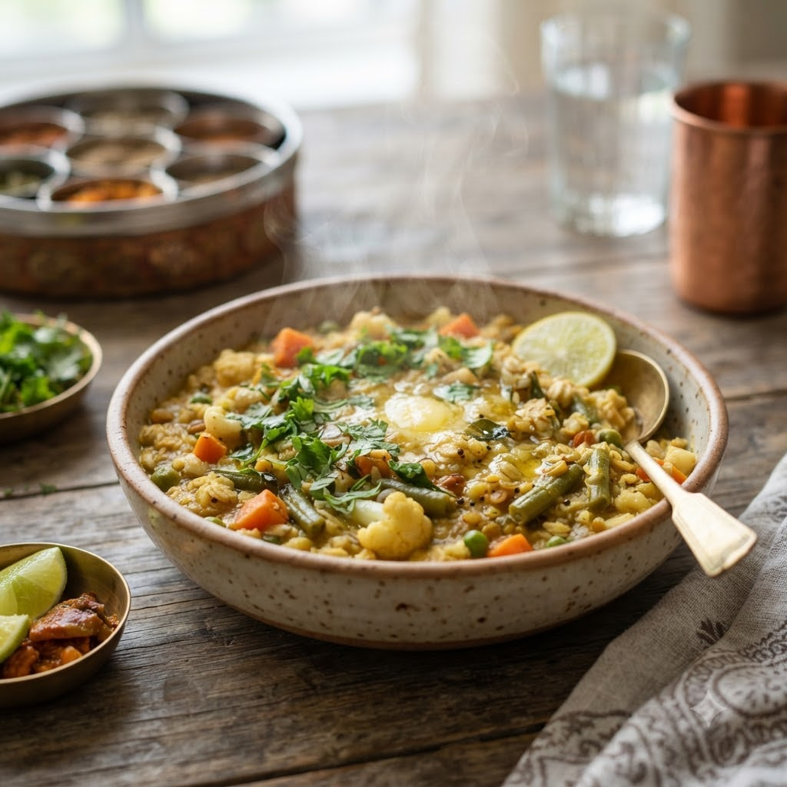

Vegetable Oats Khichdi

Vegetable Oats Khichdi
Chef Magic – Sauté + Boil Auto 19 min — Serves 3
High-Fibre • Vegetarian • Healthy • Everyday
🧑🍳 Chef Magic🍽 Serves 3
Ingredients
- 1 cup rolled oats
- 1 cup mixed vegetables, chopped
- 1 tsp mustard seeds (rai)
- 9 curry leaves (kadi patta)
- 1/2 tsp turmeric (haldi)
- 1 tbsp oil
- 2.5 cups water
- Salt to taste
Method
1Add oil, mustard seeds and curry leaves to the jar; select Sauté (Speed 2–4, ~130–160°C) until seeds splutter.
2Add vegetables and turmeric; sauté 2 minutes.
3Add oats, water and salt; select Boil (Speed 1–2, 100°C) and cook, stirring occasionally, until thickened and porridge-like.
Tip: Use certified gluten-free oats if you need this dish to be strictly gluten-free.